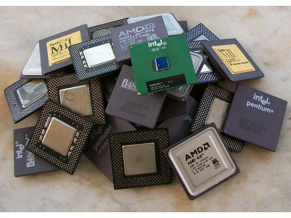
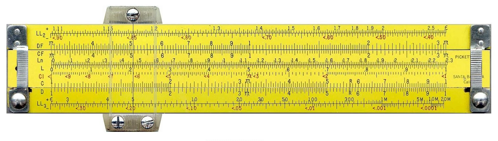
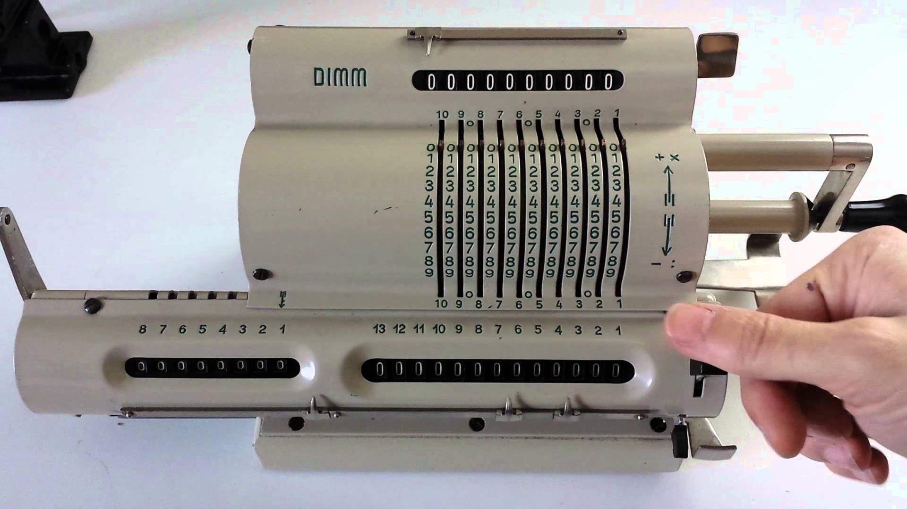
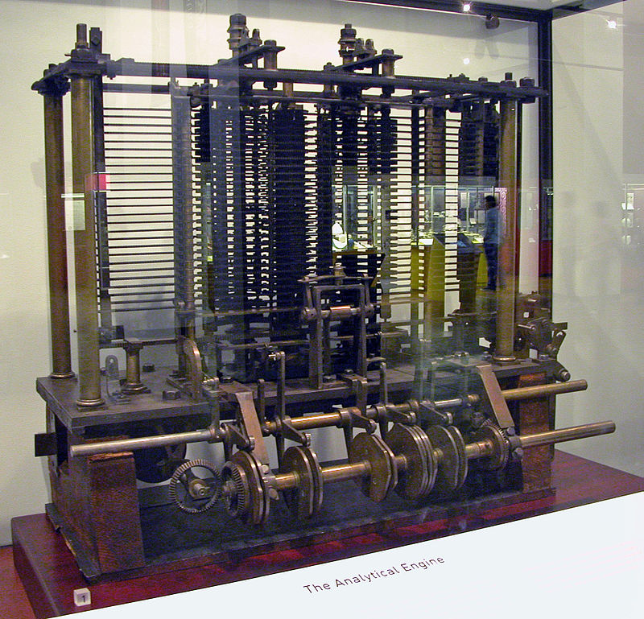
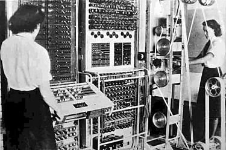
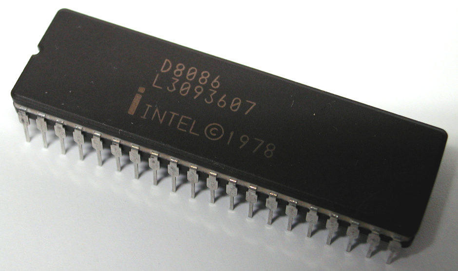
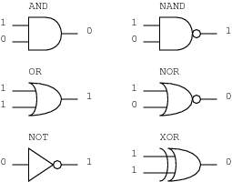
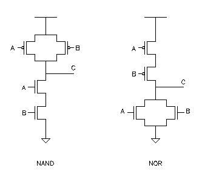
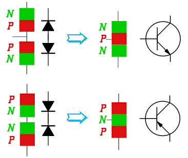
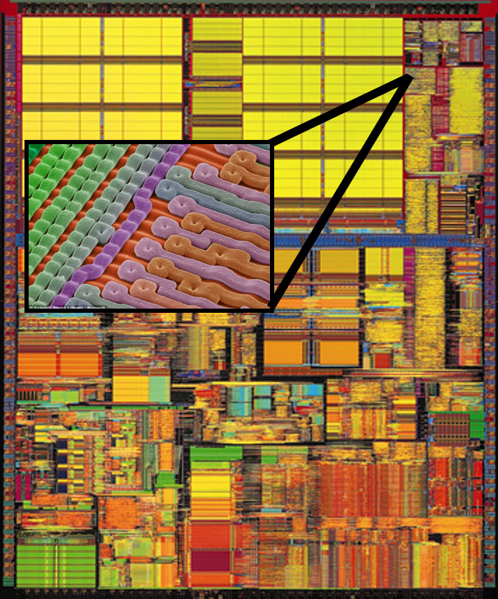

Central processing unit
Plan
- What problem is being solved?
- What is a CPU?
- History
- How does it work?
Problem
Solve all tasks with a single device
 
What is a CPU
- Simple operations: $+ - * /$ ...
- A program (instructions)

History
Mechanical devices, vacuum tube devices
|

1850s, «Analytical Engine», Henry Babbage |

1940s, Colossus computer |
History
Silicon chips
1970s, Intel 8086
How does it work?
- Lots of logic gates
- One gate made of transistors
- Transistors made physically in silicon
How does it work?
Logic gate
How does it work?
...Implemented by transistors
 How does it work?
Lots of them!
Summary
- One device for all tasks
- Does very simple operations
- Made of silicon
Thank you!
Questions?